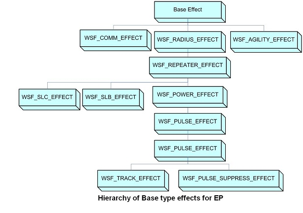
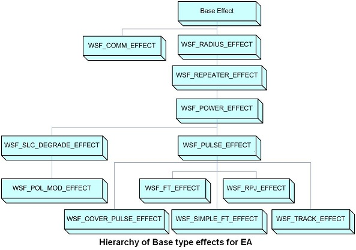

Predefined Electronic Warfare Effect Types¶
EW Effect Aggregation: Electronic Warfare Effect Aggregation
Electronic Protect Types¶
{kind=link}
WSF_AGILITY_EFFECT Radar/Comm agility effects.
WSF_COMM_EFFECT Communication effects.
WSF_POWER_EFFECT Jamming and signal power effects.
WSF_PULSE_EFFECT Pulse jamming effects.
WSF_PULSE_SUPPRESS_EFFECT Pulse jamming suppression effects.
WSF_SLB_EFFECT Sidelobe blanker effects.
WSF_SLC_EFFECT Sidelobe canceler effects.
WSF_TRACK_EFFECT Track behavioral effects.
WSF_NX_SLB_EFFECT Sidelobe blanker effects. |
Electronic Attack Types¶
{kind=link}
WSF_COMM_EFFECT Communication effects.
WSF_COVER_PULSE_EFFECT Cover pulse effects.
WSF_FALSE_TARGET_EFFECT False target effects.
WSF_POL_MOD_EFFECT Random polarization modulation effects.
WSF_POWER_EFFECT Jamming power effects.
WSF_PULSE_EFFECT Pulse jamming effects.
WSF_RADIUS_EFFECT Jamming radius effects.
WSF_REPEATER_EFFECT Repeater jamming effects.
WSF_RPJ_EFFECT Random Pulse Jamming (RPJ) effects.
WSF_SIMPLE_FT_EFFECT Simple false target effects.
WSF_SLC_DEGRADE_EFFECT Sidelobe canceler degrade effects.
WSF_TRACK_EFFECT Track behavioral effects.